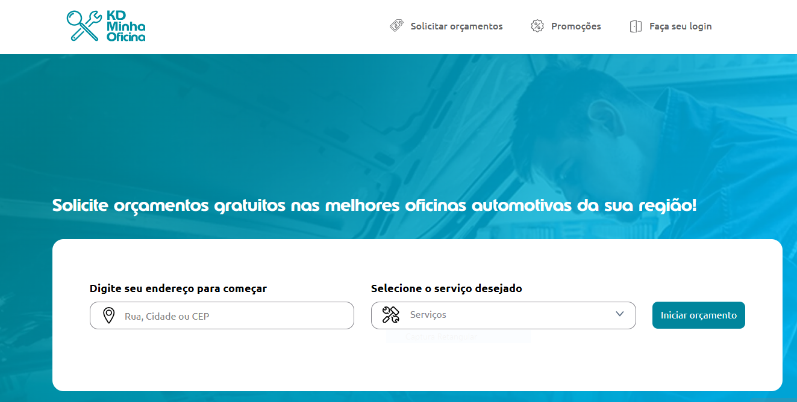
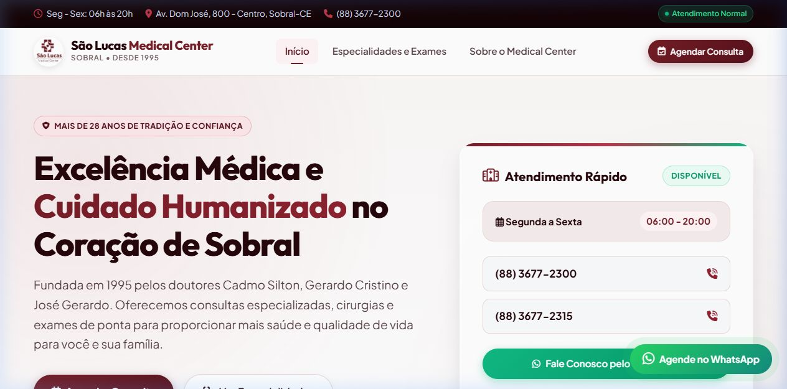
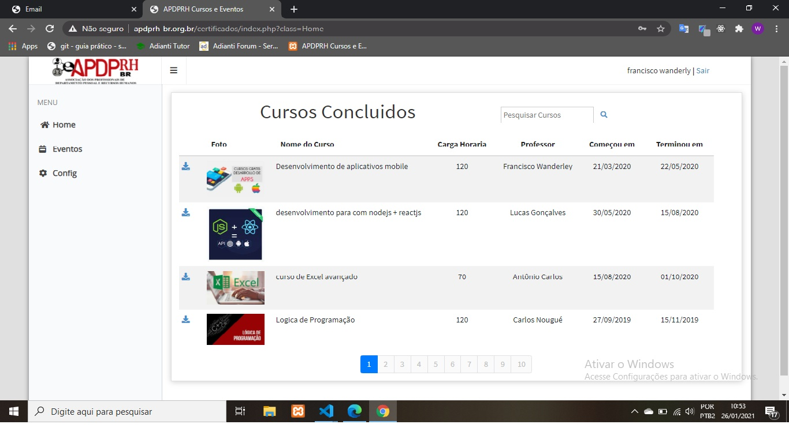
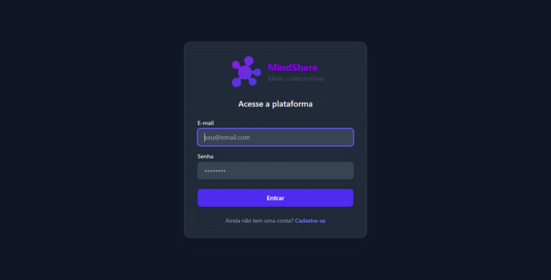
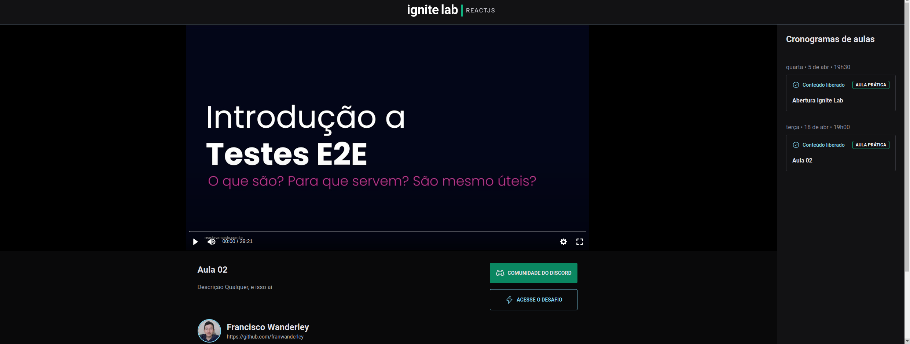

Francisco Wanderly Texeira dos Santos Filho
Desenvolvedor Full Stack JavaScript | React | Next.js | Node.js | Java | Spring Boot
Desenvolvedor Full Stack com 3 anos de experiência em projetos web, especializado na construção e manutenção de aplicações de ponta a ponta. Possuo sólida vivência no ecossistema JavaScript/TypeScript com React, Next.js e Node.js, e também experiência robusta no desenvolvimento de microsserviços com Java e Spring Boot. Busco aplicar meu conhecimento em arquiteturas escaláveis e boas práticas de desenvolvimento para criar soluções eficientes e de alto impacto em uma nova oportunidade desafiadora.
Ver CurrículoExperiência Profissional
Desenvolvedor Web e Mobile (Freelancer)
Janeiro de 2021 - Julho de 2021- Desenvolvi projetos ponta a ponta para clientes, incluindo aplicações web com React e aplicativos mobile com React Native.
- Criei e mantive APIs RESTful utilizando Node.js, express, mongodb para servir as aplicações.
Estagiário em Desenvolvimento Full Stack
Zallpy Digital Setembro de 2021 - Março de 2022- Ofereci suporte ao time de desenvolvimento em tarefas de front-end com React e back-end com Java/Spring Boot.
- Desenvolvi componentes de interface e realizei a integração com APIs REST.
- Participei de testes unitários e de integração para assegurar a qualidade e a estabilidade das aplicações.
Desenvolvedor Full Stack Júnior
Zallpy Digital Abril de 2022 - Abril de 2024- Atuei no desenvolvimento e manutenção do Kdminhaoficina utilizando React e Next.js no front-end e Java com Spring Boot para a criação e manutenção do back-end.
- Colaborei em equipes ágeis para entregar novas funcionalidades, corrigir bugs e melhorar a performance de sistemas críticos.
- Fui responsável pelo desenvolvimento de sistemas de back-office robustos, essenciais para a gestão interna e otimização das operações administrativas.
Projetos

kd Minha Oficina
Na Zallpy Digital, atuei como Desenvolvedor Full Stack no projeto Kdminhaoficina, utilizando React e Next.js para o front-end e Java com Spring Boot na estruturação do back-end.

Site da Clinica São Lucas
A clínica precisava de aumentar a presença digital. Desenvolvi uma landing page otimizada para SEO e responsivo, resultando numa navegação mais rápida. Feito com HTML,CSS e JQUERY
Site de kanbam
Um quadro de tarefas no estilo Kanban para organizar atividades. Desenvolvido com React e TypeScript, implementa a funcionalidade de arrastar e soltar (drag and drop) para mover os cards.
Ver no GitHub
Site para baixar certificado
Um site para o aluno que fez seu curso na APDPRH possa baixar seu certificado ao acertar as palavras chaves do Curso. Feito com Adianti Framework,PHP e MySQL

Mindshare
É uma plataforma para compartilhamento de ideias, com grupos para discussões e muito mais. Utilizando React, Vite, Fastify, Prisma e Neon

Site de video-aula
Um sistema de videos feito no curso Especialização em React || RocketSeat utilizando react, graphQL, tailwind, apollo
Ver no GitHubContato
Vamos conversar! Entre em contato através dos links abaixo.